社内 AI 駆動開発スプリント競技 参加報告
観光アプリ「ひとめぐり」を AI（Claude Code）と作りました。作るアプリの構想は事前に考えてあり、当日も環境準備と要件定義に約 2 時間かけました。仕様が固まってからは、通しで動く初版が 38 分でできています。その後チームからのフィードバック 10 回で、構造ごと作り直しました。生成 AI アプリの提案と業務活用支援に持ち帰れる学びをまとめます。
架空の観光地「星凪諸島」のスタンプラリーに足す、観光者向けスマホ Web アプリです。
約 12 時間のうち、初版の実装は 38 分（約 5%）でした。その前に環境準備と要件定義で約 1 時間ずつ、後ろに直しの約 9 時間 20 分があります。
競技は 10:00 開始です。10:30 に最初のセッションを開き、10:59 に事前に考えてきたアプリの構想（約 1,700 字）を送りました。11:16 から Skill「grilling」で AI に質問させる形で要件を詰め、計画を承認したのが 11:57 です。事前の検討時間はこの帯に含めていません。
| 日時 | 出来事 | テスト |
|---|---|---|
| 競技前 | どういうアプリを作るかを事前に検討 | — |
| 11-09 10:00 | 競技開始。環境準備（10:30 に最初のセッション） | — |
| 10:59 | 事前の構想を送り、要件定義を開始。11:16 から AI の質問に答える形で詰める | — |
| 11:57〜11:59 | 計画を承認、仕様確定（質問 5 ラウンド）。要約（CLAUDE.md）と要件・構成・データの文書 | — |
| 12:06 | 土台（DB、CSV 取り込み、時計、起動スクリプト） | 9 |
| 12:12〜12:33 | 旅中・旅前・ポイントと抽選・AR フォト・おもいで便・指標と運営の窓・デモ層。1 機能あたり 2〜6 分 | 28 |
| 12:37 | 5 場面の通し確認と文書一式。初版完成 | 28 |
| 13:45〜13:51 | UI の再設計。スタンプラリー要素を外し「場所 → そこにいる人」の構造に | 28 |
| 15:04〜17:17 | 第 2〜6 回フィードバック対応。途中でセルフチェックと要修正 4 件の修正 | 37 |
| 11-10 10:37〜12:06 | 第 7〜10 回フィードバック対応。第 8 回で「種・花」を画面から外す。並行して発表スライド 10 枚 | 40 |
| 12:55〜14:16 | デモの仕上げ（初期化の漏れ、アプリ名変更、キャッシュ対策） | 45 |
11:59 以降の時刻はコミット時刻、それ以前と 2 日目の開始（9:32）はセッション記録の時刻。合計には休憩も含む。人が指示や確認に使った時間の内訳は記録していません。
体験の良し悪しは、チームが触って決めました。AI は指摘されればすぐ直しますが、指摘されるまでは気づきませんでした。
開発はとても速く、クオリティも高い。ただ、どういう UX を実現したいかを画面遷移も含めて人間がしっかり考えないと、どこを触ったらいいか分からないアプリになってしまう。アプリの UI に関する知識がないと、具体的な指示もできないと感じた。
| 最初に AI が作ったもの | 人の判断 | 取り出した型 |
|---|---|---|
| 「会える人」を入口にし、スタンプラリー要素も並べた | 入口を「場所」に戻し、人は「ここにいる人」として添えた | 入口は利用者がもともと探しているものにする |
| 種 → つぼみ → 花、季節スタンプ、回数の帯を同時に見せた | 見せるのは「会えた回数」の帯だけ。データと API は残した | 見せる物差しは 1 つ。作り込んだ仕組みでも外す |
| 大事な操作を 1.2 秒の長押しにした | 全廃して「ボタン → 確認」に統一 | 隠れた操作は気づかれない |
| 撮った写真やレシートが別のタブにしか出なかった | 「撮る」ボタンの直下に結果を出した | 結果は操作した場所のすぐ下に |
| ルーレットのマスの広さを確率に比例させた | マスは同じ広さにし、確率は表で見せた | 演出は結果を伝えるだけ。確率は表で正直に |
| 運営の画面を指標の一覧から始めた | 先頭を「次の一手」の提案にした | 運営者が知りたいのは次に何をするか |
この種の指摘は 10 回で 26 項目あり、すべて「最初にやったこと → 指摘 → 直し方 → 型」の形で記録しました。
効いたのはプロンプトの工夫よりも、AI との「約束」と「記録」の置き方でした。題材を問わず使えます。
| やったこと | 効果 |
|---|---|
| 実装の前に、「grilling」という Skill で AI から人へ質問させて仕様を詰める（5 ラウンド） | 初期の要件定義が効率よく進んだ。人が要件を書き出すのではなく、AI が抜けや曖昧な点を順に聞いてくるので、答えるだけで仕様が固まった。着手後に質問で止まる場面も減らせた |
| AI への指示を音声入力で出す | 指示出しが速くなった。背景や理由まで含めた長い説明を、打つ手間なく渡せた。要件定義の回答やフィードバックのように、話したほうが早い内容に向いていた |
| 仕様の要約を 1 枚（CLAUDE.md）にして毎回読ませる | 禁止事項（格付けを作らない、外部通信なし）が最後まで守られた |
| 「質問はしない。迷ったら選んで記録に残す」と決める | 手が止まらない。判断は後から人が読んで直せる |
| 遅れたときに削る順番を先に決める | 「通しで動く」を最優先に保てた |
| 時刻付きの 1 行進捗ログと判断ログを AI に書かせる | 経緯が残り、別のセッションや報告書がそこから始められた |
| デモ用の機能を本体から分け、時刻の取得を 1 箇所に集める | 「30 日後」「次の季節」をその場で見せられた。本番に影響しないこともテストで確認 |
| 素材作りや資料作りを別のセッションに分けて並行させる | 画面の修正を止めずに、マスコット・地図・スライドが揃った |
コードだけでなく、提案活動に必要な周辺の成果物まで AI で揃いました。
計画・マップ・ひとめぐり帖・クーポンなど下タブ 5 つ。API、DB、テスト 45 件を含みます。
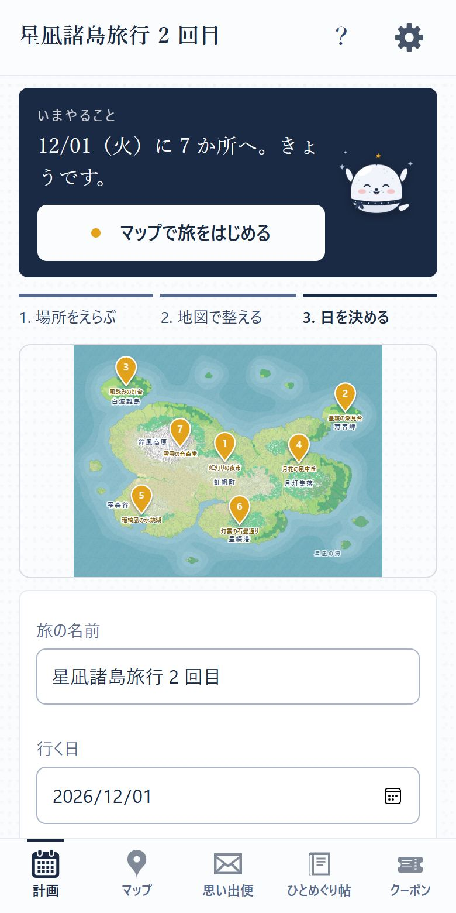
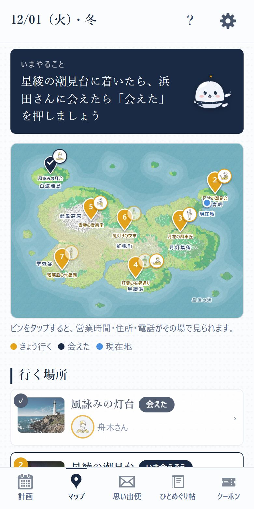
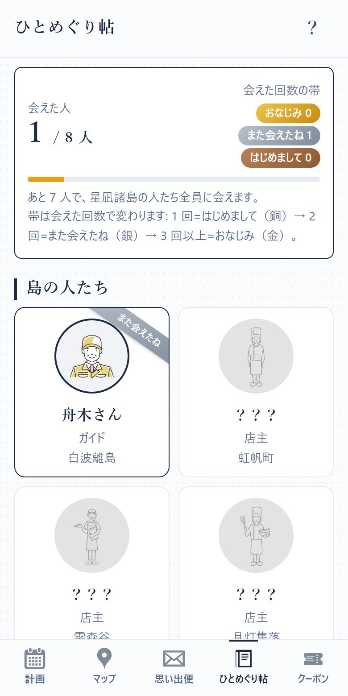
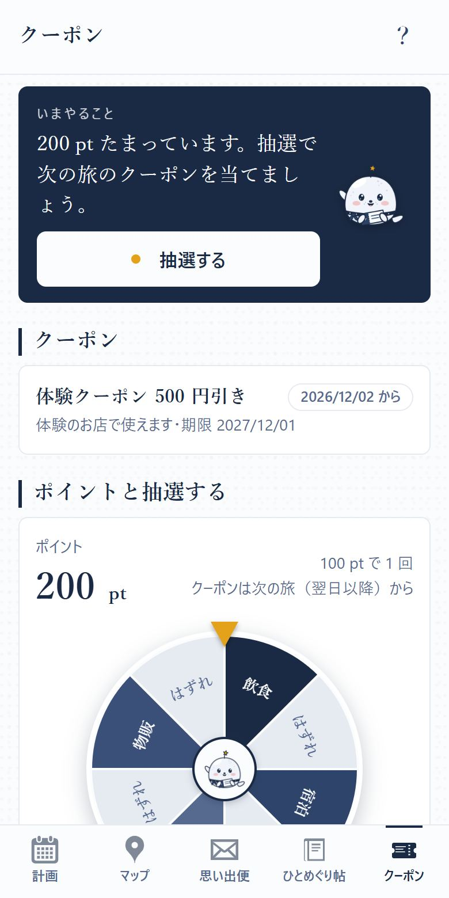
地域（DMO）とお店の 2 つの立場。開くと数字ではなく「次の一手」の提案から始まります。
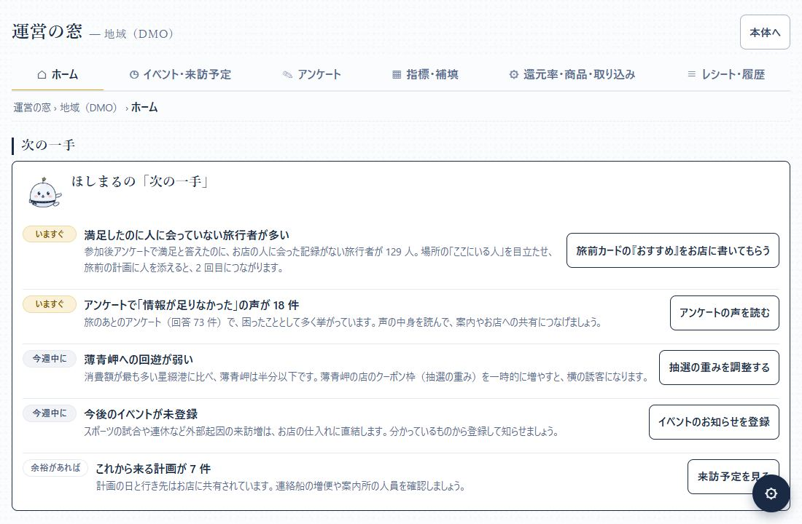
自作マスコット「ほしまる」は場所別 7 種とポーズ 10 種。AR フレーム 12 種、アンケートのお礼素材 18 点、諸島の地図も作りました。既存キャラクターは使っていません。
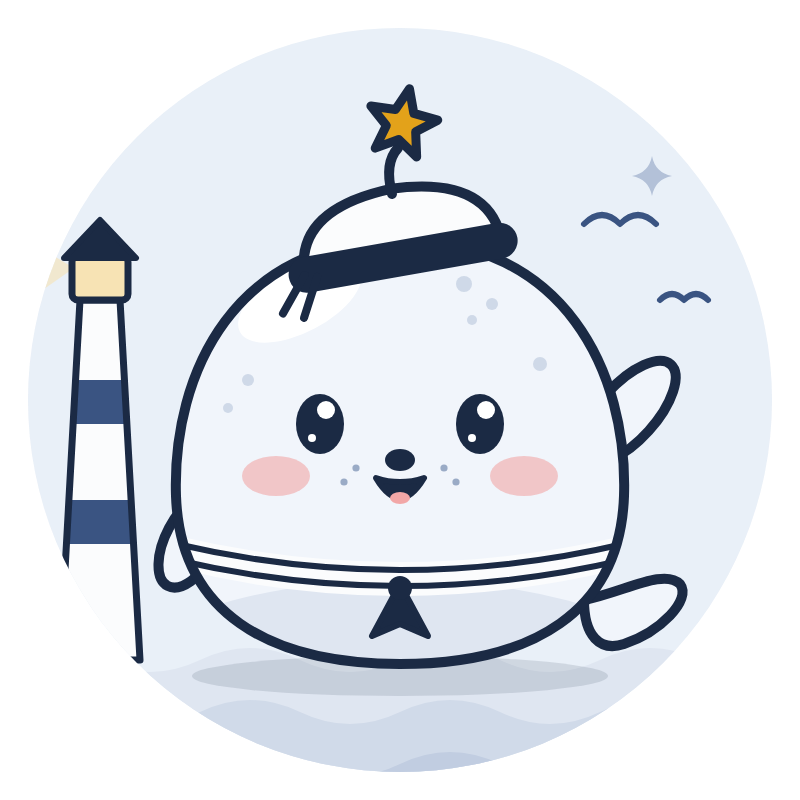
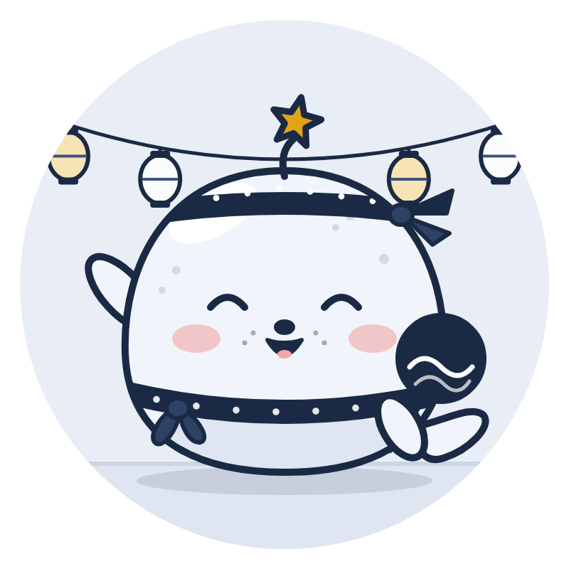
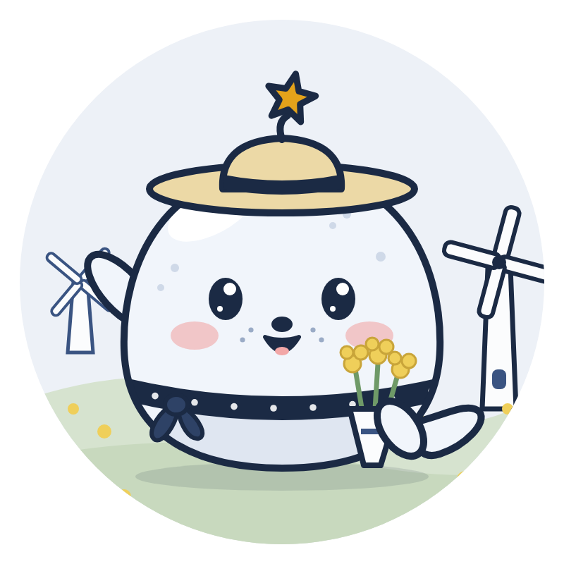
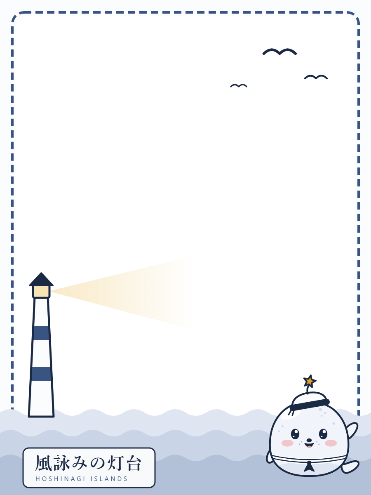
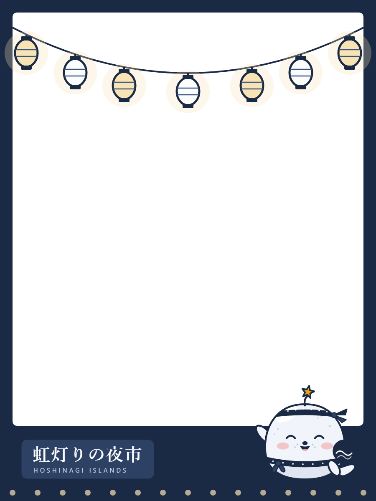
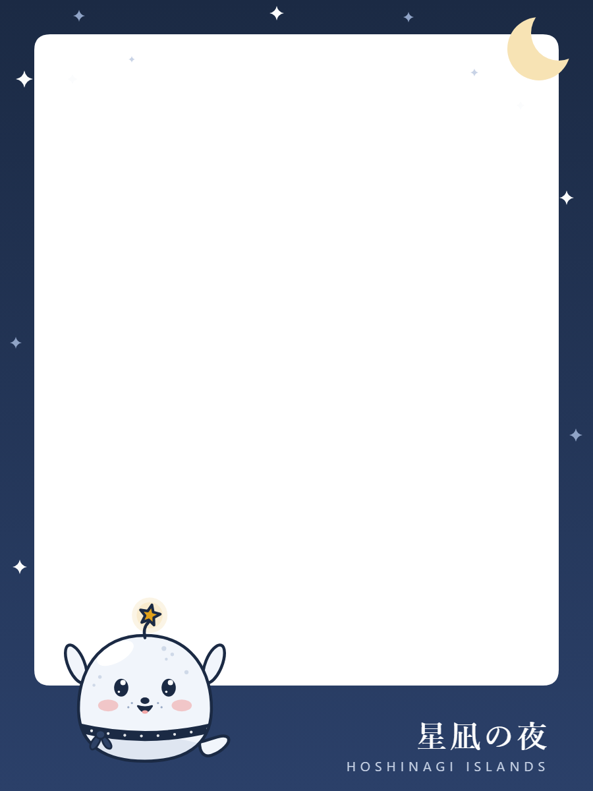
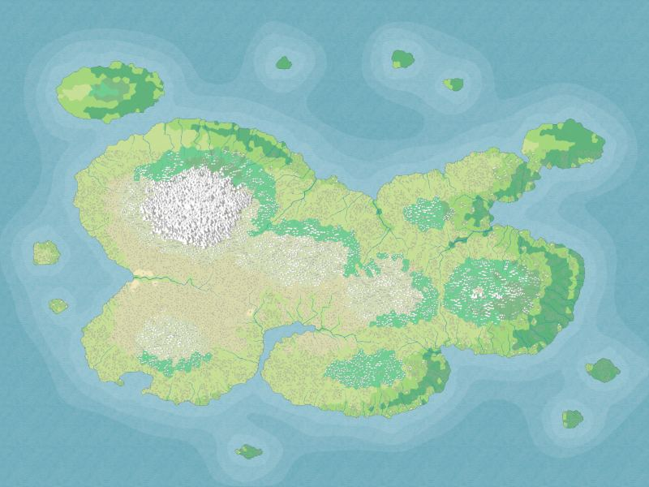
要件・構成・データ・画面・機能・テスト・セキュリティ・ライセンスの各文書と、サービス構成図。
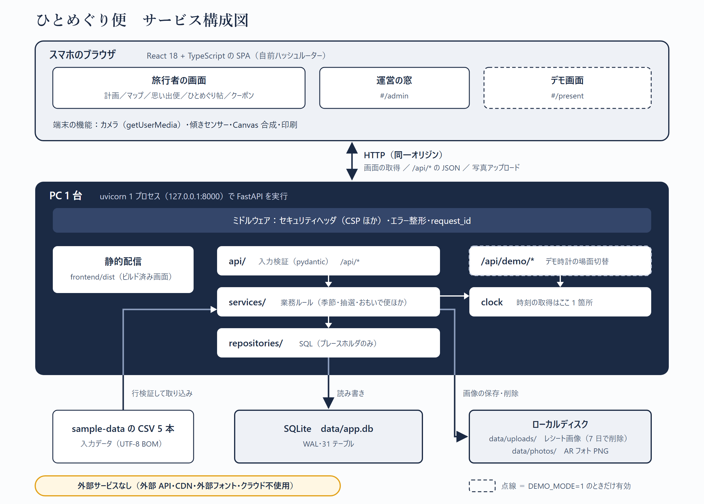
スライド 10 枚、6 分の時間割と台本、デモ画面の場面ごとの説明。
事務局の 8 観点（サービス性 4・技術 4）に沿ったセルフチェックと、学びをまとめた Claude 用 Skill「tourism-app-ux」。どちらも文書なので画像はありません。
AI に点検させると実際に不具合が見つかり、同じ日に直せました。点検の範囲と、直す・直さないの線引きは人が決めています。
.. でリポジトリ内のファイルが取れた）／店の編集で定休日が消える／営業時間 99:99 で利用者の画面がエラー／運営向けの提案がデモ時計ではなく実時刻を見ていた。「動いた」と「確認した」を分けて記録させたことが、提案時に説明できる材料になりました。
手戻りの多くは、機能を足したときの「周辺の更新漏れ」でした。
根拠にした記録：リポジトリの進捗ログ、判断ログ、8 観点セルフチェック、技術構成の文書、Skill、コミット履歴。